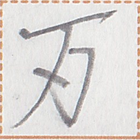
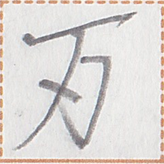

← Previous
Index
Next →
English: The tiger walked over quietly.
Chinese: 老虎悄悄地走过来。
Chinese (pinyin): Lǎohǔ qiāoqiāo de zǒu guòlái.
Pekzep (latin transcription): dau2 na1 a xi1 mok1 ta.
Pekzep (hanzi transcription): 虎静之足行終。
Pekzep (linzklā):  



Analysis: